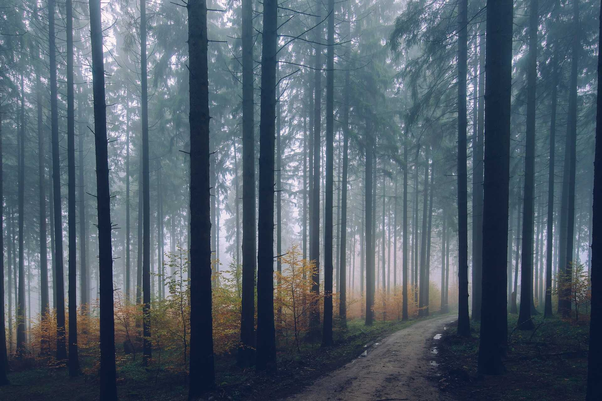

Vandra i skogen
Östansjö Camping är omgiven av skog. Här finns många stigar och skogsvägar att vandra eller springa på. Vi har kartor över egna leder som vi dragit upp men kan också tipsa om hur du kopplar ihop längre rutter med hjälp av skogs- och grusvägar. Dessutom erbjuder vi guidade vandringar som bland annat fokuserar på flora och fauna eller lokalhistoria.
Hur bokar jag en vandring?
Hämta en ledkarta från receptionen och ge dig av! Vi hjälper dig gärna med tips på rutter baserat på hur långt du vill gå och vad du vill uppleva.
Guidade vandringar annonseras dels på vår webbsida, dels på anslagstavlan i receptionen. En ny lista på guidade vandringar kommer upp varje vecka. För att delta behöver du registrera dig senast kvällen innan vandringen i receptionen.
